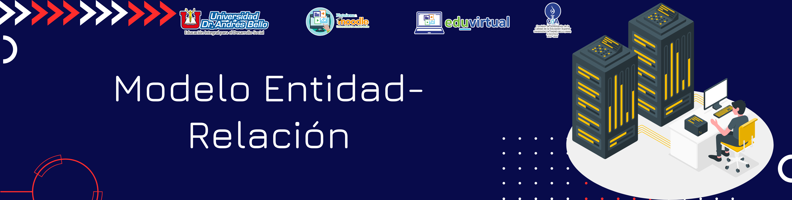
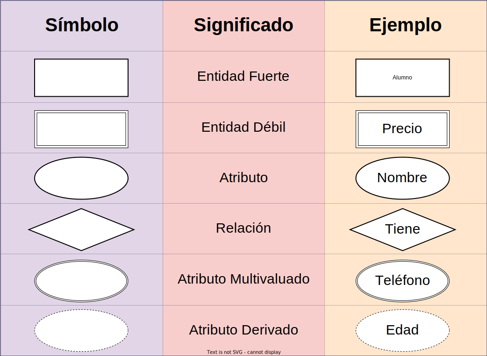

Modelo Semántico y Modelo Entidad-Relación
4. Modelo Entidad-Relación
Contenido
Este modelo se desarrolló para facilitar el diseño de las bases de datos. (presentado por Chen en 1976).
La idea de este modelo de representación de la información es mostrar los datos que contendrá un sistema como un conjunto de objetos con atributos propios, los cuales son capaces de disminuir la redundancia presente en un sistema de archivos tradicionales y ocupar mejor la estructura presente en los datos a almacenar.
Identificar las cosas importantes del negocio (entidades), sus propiedades (atributos), y la forma en que estas cosas se relacionan (relaciones). Se utiliza para diseñar la estructura de una Base de Datos mediante una colección de herramientas conceptuales que permiten describir los datos, las entidades que intervienen, las relaciones entre las diferentes entidades u objetos y las restricciones de consistencia.

El modelado entidad relación se basa en una percepción del mundo real. Consiste en una colección de objetos básicos llamados ENTIDADES y RELACIONES.
ENTIDAD: Objeto que es distinguible de otros objetos por medio de un conjunto especifico de ATRIBUTOS.
RELACION: Es una asociación entre dos o varias entidades.
Obra publicada con Licencia Creative Commons Reconocimiento Compartir igual 4.0